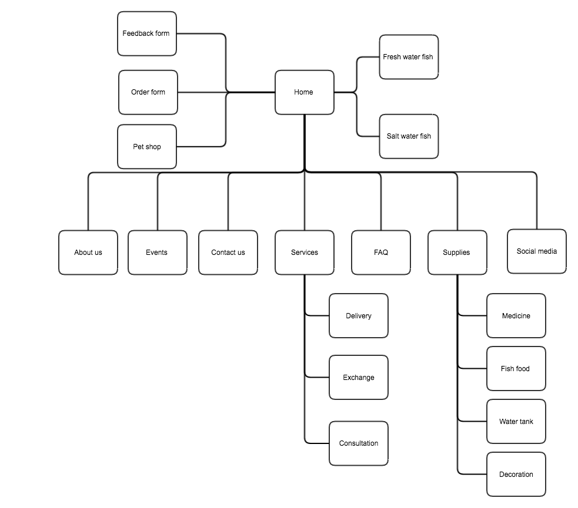

CP1406 - 2016 Group Project Report
Group Number
Members: Richardo Rudyani Kho
, Arvindeep Singh, Li Sinan, Chen Shenhai
GitHub
Our Fish-Tatic(Howie4PP, sinanli1994, arvindeep, richardo95)
Goals
This website will help our client to access the internet and gain publicity through it. The web is intended to improve client's
by expanding their bussiness, which will help company to sell their goods or supplies.
Completed Work by Who
brief details of who did what
- Richardo Rudyani Kho: Controlling the progress of the project, editing services page
- Arvindeep Singh: Collecting images and datas
- Li Sinan: Editing supplies page, contact us page, FAQ page
- Chen Shenhai: Editing Home page, editing pictures
Testing Details
- Clear and brief navigation
- There should be no broken links
- Sufficient content
References
references (links) for any code, images or content that you have used that are not your own
- https://www.securewebsiteservices.com/portfolio_c_ec_1.html
- http://www.shutterstock.com/similar-133770554/stock-vector-vintage-bluefin-tuna-badge-set-editable-eps-vector-illustration.html?page=1&inline=150793922
- http://g-ecx.images-amazon.com/images/G/01/img15/pet-products/category_hero/23698_pets_vertical_aquatic_herolandscape._CB313453703_.jpg
- http://thumbs.dreamstime.com/x/style-blue-fish-logo-vector-set-design-62586063.jpg
- http://ww1.prweb.com/prfiles/2012/10/23/10051100/go_fish_digital_logo.jpeg
- http://previews.123rf.com/images/roxanabalint/roxanabalint1303/roxanabalint130300029/18299048-Pet-shop-grunge-rubber-stamp-on-white-illustration-Stock-Vector.jpg
- http://downloadicons.net/sites/default/files/anchor-icon-14185.png
- http://www.7zyd.com/bbs/tribe/data/attachment/forum/201204/13/1744423pcg52k1891yu5yx.jpg
- http://img01.lanimg.com/151127/330809-15112F2003271.jpg
- http://www.jitu5.com/uploads/allimg/150811/258441-150Q121535578.jpg
PMI
your group should spend some time reflecting on the process and describe here the Pluses, Minuses and Interesting
aspects of your teamwork process and result
Pluses:
- from our team , each member co-ordinate's very well.
- every decision related to the project is made by the permission of every single team
- we divide our work with self responsibilities and also complete it in given time.
- in our team, mistake made by one person always got corrected by the other team members or with the help of other team members.
Minuses:
- since all the team members have different schedules, we dont have enough time to sit together and discuss about the projects and teamwork.
- still need to fix a lot of things in our project(too many types of fonts, need to fix the search bar
Interesting:
- our team leader is so cool, he does not push us towards goal, but he also make us feel relax so we can do our jobs with calm minds.
- in our team, may be sometimes we dont look that much serious towards work or project, but after having some fun we always shift our focus towards our goals.
Flow Chart
